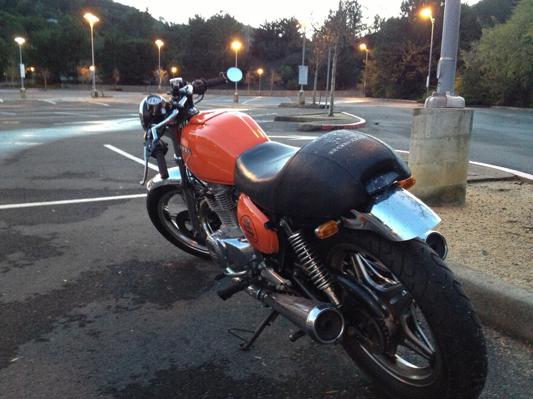

Zen and the Art of Biking
Zen and the Art of Biking
## Road Biking Photo Album
We bike between 20 to 100 miles a week in and around
Alameda and Contra Costa Counties -- these hills are the
Goddess' Gift to Biking!
### ⭐ [My 1st AIDS LifeCycle (SF to LA)](/aidslifecycle) ⭐
### ⭐ [Our favorite East Bay bike routes](/tours/) ⭐
### ⭐ [AIDS LifeCycle training rides](/training-rides) ⭐
### Biking Photo Albums
- [AIDS LifeCycle 2008 charity ride](/photos/?ALC)
- [Tyler Hamliton Foundation charity ride](/photos/?Tyler Hamilton Foundation)
- [East bay redwood loop](/photos/?russ bike redwood loop)
- [Morgan territory loop](/photos/?morgan territory)
Review from our
[favorite 60 mile ride](http://forums.roadbikereview.com/showthread.php?t=4520)
_We used to enjoy mountain Biking,
before our bikes were stolen._ 😡
---
### Motorcycle posts -- Honda CB400A "decaf" Cafe Racer
